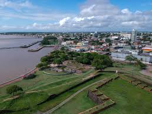

O Amapá, localizado no extremo norte do Brasil, tem uma população estimada em 802.837 habitantes em 2024. O estado é composto por 16 municípios, sendo Macapá a capital e cidade mais populosa. Governado por Clécio Luís Vilhena Vieira em 2023, o Amapá destaca-se por sua economia voltada para a bioeconomia, com foco em produtos florestais não madeireiros como óleos essenciais, cosméticos e superfrutas da Amazônia, como açaí, castanha e cacau. A expectativa é que a realização da COP 30 no estado impulsione ainda mais esses setores. O Índice de Desenvolvimento Humano Municipal (IDHM) do Amapá é de 0,688, indicando desafios em áreas como educação e saúde.
